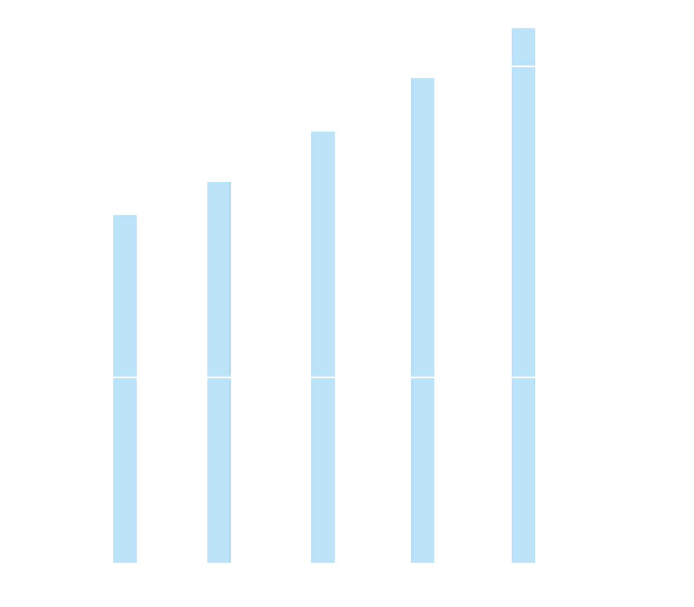
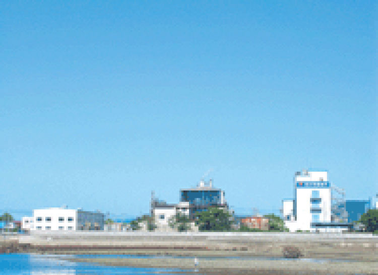
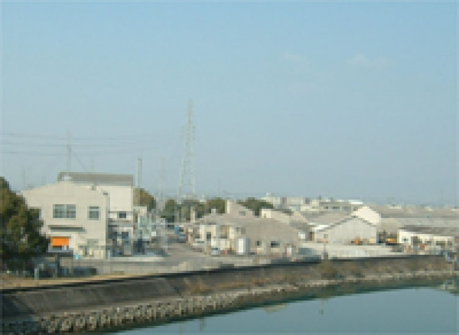

- 名 称
- 株式会社伏见制药所
- 创 立
- 1923年(大正12年)2月
- 设 立
- 1951年(昭和26年)4月
- 法人代表
- 代表取缔役社长 伏见 丰
- 注册资金
- 1亿日元
- 员工人数
- 239人
- 年销售额
- 103亿日元
- 事业内容
- 生产销售业（医药品、工业药品、食品等其他）
亿日元
销售额变化
总公司地址
〒763-8605 香川县丸龟市中津町1676
事业所
东京营业所 〒101-0044 東京都千代田区鍛冶町2-3-1
大阪营业所 〒541-0042 大阪市中央区今桥3-2-20
丸龟营业所 〒763-8605 香川县丸龟市中津町1676
工场
总公司工场开发部 〒763-8605 香川县丸龟市中津町1676
昭和町工场 〒763-0061 香川县丸龟市昭和町103-1
港町工场 〒763-0042 香川县丸龟市港町307
徳岛工场 〒771-1153 徳岛市应神町吉成有天104-1


总公司工场开发部
港町工场

昭和町工场
徳岛工场